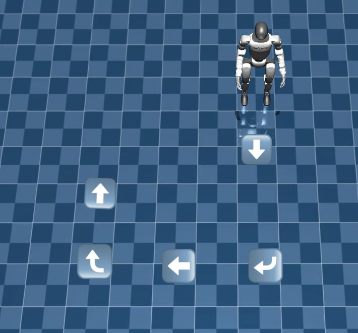

<!DOCTYPE html>
<html lang="es">
<head>
  <meta charset="UTF-8" />
  <meta name="viewport" content="width=device-width, initial-scale=1" />
  <title>Unitree Setup - Robotics 4.0</title>
  <link rel="icon" type="image/png" href="assets/img/ejemplos/robotics40_logo.png">
  <style>
    body {
      font-family: Arial, sans-serif;
      margin: 0; padding: 0;
      background: #121212;
      color: #eee;
    }
    header {
      background: #0d47a1;
      padding: 1.5rem;
      text-align: center;
    }
    header h1 {
      margin: 0;
      font-weight: 700;
      font-size: 2rem;
    }
    main {
      max-width: 960px;
      margin: 2rem auto;
      padding: 0 1rem;
    }
    .ejemplos-grid {
      display: grid;
      grid-template-columns: repeat(auto-fit,minmax(320px,1fr));
      gap: 2rem;
    }
    .ejemplo-card {
      background: #1e1e1e;
      border-radius: 8px;
      box-shadow: 0 2px 6px rgba(0,0,0,0.8);
      padding: 1rem;
      display: flex;
      flex-direction: column;
      align-items: center;
    }
    .ejemplo-card h3 {
      margin: 0 0 0.5rem;
      color: #2196f3;
      font-size: 1.2rem;
      text-align: center;
    }
    .ejemplo-card img {
      max-width: 100%;
      border-radius: 4px;
      margin-bottom: 0.8rem;
    }
    .ejemplo-card video {
      max-width: 100%;
      border-radius: 4px;
      margin-bottom: 0.8rem;
      background: black;
    }
    .ejemplo-card a {
      text-decoration: none;
      background: #2196f3;
      color: white;
      padding: 0.5rem 1rem;
      border-radius: 4px;
      font-weight: 600;
      transition: background 0.3s ease;
    }
    .ejemplo-card a:hover {
      background: #1769aa;
    }
    footer {
      text-align: center;
      padding: 1.5rem 0;
      color: #777;
      font-size: 0.9rem;
      background: #0d47a1;
      margin-top: 3rem;
    }
  </style>
<header style="display: flex; align-items: center; padding: 1rem;">
    
    <div>
      <h1 style="margin: 0;">Unitree Setup - Robotics 4.0</h1>
      <p style="margin: 0;">Ejemplos y demostraciones para el robot Unitree G1</p>
    </div>
 </header>
  
  <main>
    <!-- Tarjeta de navegación a la secuencia -->
    <div style="text-align: center; margin-bottom: 2rem;">
        <a href="https://github.com/dockerobotics40/Unitree-setup/blob/main/ejemplos/ Secuencia_de_Ejecucion.md" 
        target="_blank" rel="noopener noreferrer"
        style="display: inline-block; padding: 1rem 2rem; background-color: #004080; color: white;
                text-decoration: none; border-radius: 10px; font-size: 1.2rem; font-weight: bold;">
        👉 Ver Secuencia General de Ejecución del Proyecto
        </a>
    </div>
    <section class="ejemplos-grid">

      <!-- Ejemplo 1 -->
      <div class="ejemplo-card">
        <h3>Ejemplo de bajo nivel</h3>
         <!-- YouTube video embebido -->
          <iframe
            width="560"
            height="315"
            src="https://www.youtube.com/embed/bJHJq7a1UxI"
            title="Video de ejemplo"
            frameborder="0"
            allow="accelerometer; autoplay; clipboard-write; encrypted-media; gyroscope; picture-in-picture"
            allowfullscreen>
         </iframe>       
        <a href="https://github.com/dockerobotics40/Unitree-setup/blob/main/ejemplos/Ejemplo_bajo_nivel.md" target="_blank" rel="noopener noreferrer">Ver paso a paso</a>
      </div>

      <!-- Ejemplo 2 -->
      <div class="ejemplo-card">
        <h3>Ejemplo de alto nivel</h3>
        
        <video controls>
          <source src="assets/videos/ejemplos/Codigo_basico_brazos_caminata.mp4" type="video/mp4" />
          Tu navegador no soporta video.
        </video>
        <a href="https://github.com/dockerobotics40/Unitree-setup/blob/main/ejemplos/Ejemplo_alto_nivel.md" target="_blank" rel="noopener noreferrer">Ver paso a paso</a>
      </div>

      <!-- Ejemplo 3 -->
      <div class="ejemplo-card">
        <h3>Código Básico de Movimientos en Alto Nivel</h3>
      
        <!-- Dos imágenes en línea -->
        <div style="display: flex; gap: 10px; justify-content: center; margin-bottom: 10px;">
          
          
        </div>
      
        <!-- Primer video -->
        <video controls style="width: 100%; margin-bottom: 10px;">
          <source src="assets/videos/ejemplos/video1.mp4" type="video/mp4" />
          Tu navegador no soporta video.
        </video>
      
        <!-- Imagen adicional -->
        
      
        <!-- Segundo video -->
        <video controls style="width: 100%; margin-bottom: 10px;">
          <source src="assets/videos/ejemplos/video2.mp4" type="video/mp4" />
          Tu navegador no soporta video.
        </video>
      
        <!-- Enlace al paso a paso -->
        <a href="https://github.com/dockerobotics40/Unitree-setup/blob/main/ejemplos/Codigo_basico_movimientos_altoNivel.md"
           target="_blank" rel="noopener noreferrer">
          Ver paso a paso
        </a>
      </div>

      <!-- Ejemplo 4-->
      <div class="ejemplo-card">
        <h3>Código ejemplo movimeinto y manejo de brazos</h3>
      
        <!-- Dos imágenes en línea -->
        <div style="display: flex; gap: 10px; justify-content: center; margin-bottom: 10px;">
          
          
        </div>
      
        <!-- Primer video -->
        <video controls style="width: 100%; margin-bottom: 10px;">
          <source src="assets/videos/ejemplos/video1.mp4" type="video/mp4" />
          Tu navegador no soporta video.
        </video>
      
        <!-- Enlace al paso a paso -->
        <a href="https://github.com/dockerobotics40/Unitree-setup/blob/main/ejemplos/Ejemplo_movimiento_brazos.md"
           target="_blank" rel="noopener noreferrer">
          Ver paso a paso
        </a>
      </div>

        <!-- Ejemplo 5-->
        <div class="ejemplo-card">
          <h3>Código movimiento de brazos personalizado e interactivo</h3>
        
          <!-- Dos imágenes en línea
          <div style="display: flex; gap: 10px; justify-content: center; margin-bottom: 10px;">
            
            
          </div> -->
        
          <!-- Primer video -->
          <video controls style="width: 100%; margin-bottom: 10px;">
            <source src="assets/videos/ejemplos/video1.mp4" type="video/mp4" />
            Tu navegador no soporta video.
          </video>
        
          <!-- Enlace al paso a paso -->
          <a href="https://github.com/dockerobotics40/Unitree-setup/blob/main/ejemplos/Codigo_movimento_articulaciones_brazos_interactivo.md"
             target="_blank" rel="noopener noreferrer">
            Ver paso a paso
          </a>
        </div>
        <!-- Ejemplo 6-->
        <div class="ejemplo-card">
          <h3>Código movimiento de brazos personalizado e interactivo - con caminata</h3>
        
          <!-- Dos imágenes en línea -->
          <!-- <div style="display: flex; gap: 10px; justify-content: center; margin-bottom: 10px;">
            
            
          </div> -->
        
          <!-- Primer video -->
          <video controls style="width: 100%; margin-bottom: 10px;">
            <source src="assets/videos/ejemplos/video1.mp4" type="video/mp4" />
            Tu navegador no soporta video.
          </video>
        
          <!-- Enlace al paso a paso -->
          <a href="https://github.com/dockerobotics40/Unitree-setup/blob/main/ejemplos/Codigo_basico_brazos_caminata.md"
             target="_blank" rel="noopener noreferrer">
            Ver paso a paso
          </a>
        </div>

        <!-- Ejemplo 7-->
        <div class="ejemplo-card">
          <h3>Código movimiento automático usando odometría</h3>
        
          <!-- Dos imágenes en línea -->
          <!-- <div style="display: flex; gap: 10px; justify-content: center; margin-bottom: 10px;">
            
            
          </div> -->
        
          <!-- Primer video -->
          <video controls style="width: 100%; margin-bottom: 10px;">
            <source src="assets/videos/ejemplos/video1.mp4" type="video/mp4" />
            Tu navegador no soporta video.
          </video>
        
          <!-- Enlace al paso a paso -->
          <a href="https://github.com/dockerobotics40/Unitree-setup/blob/main/ejemplos/Protocolo_navegación_autonoma.md"
             target="_blank" rel="noopener noreferrer">
            Ver paso a paso
          </a>
        </div>
        <!-- Ejemplo 8-->
        <div class="ejemplo-card">
          <h3>Código movimiento automático usando odometría con movimeinto de brazos</h3>
        
          <!-- Dos imágenes en línea -->
          <!-- <div style="display: flex; gap: 10px; justify-content: center; margin-bottom: 10px;">
            
            
          </div> -->
        
          <!-- Primer video -->
          <video controls style="width: 100%; margin-bottom: 10px;">
            <source src="assets/videos/ejemplos/video1.mp4" type="video/mp4" />
            Tu navegador no soporta video.
          </video>
        
          <!-- Enlace al paso a paso -->
          <a href="https://github.com/dockerobotics40/Unitree-setup/blob/main/ejemplos/Navegacion_autonoma_con_brazos.md"
             target="_blank" rel="noopener noreferrer">
            Ver paso a paso
          </a>
        </div>
      

      <!-- Puedes copiar este patrón para más ejemplos -->

    </section>
  </main>
  <footer>
    &copy; 2025 Equipo Robotics 4.0 - Unitree Setup
  </footer>
</body>
</html>
